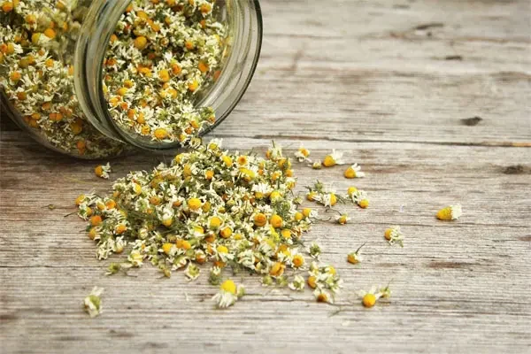

بابونج
زهور نباتية لمشروبات الأعشاب. يُحدد المشتري الشكل والحجم المطلوبين.
ملف المنتج ↗تصفح الزهور والنباتات، والأشكال المتاحة للاستفسار، ومتطلبات التوريد والمواصفات لدى فيردليف.
سلامة الأزهار أو الكؤوس وحجم القطع والشوائب واللون.

زهور نباتية لمشروبات الأعشاب. يُحدد المشتري الشكل والحجم المطلوبين.
ملف المنتج ↗
زهور نباتية لتطبيقات مختارة في مشروبات الأعشاب والمكونات النباتية.
ملف المنتج ↗
مكوّن نباتي ذو نكهة حمضية لمشروبات الأعشاب وتصنيع المشروبات.
ملف المنتج ↗
مكوّن نباتي؛ يُرجى تأكيد النوع والجزء النباتي والاستخدام.
ملف المنتج ↗